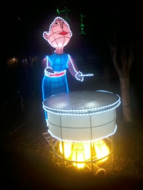
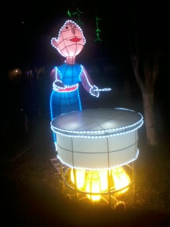

A partir del 25 de noviembre los mejores productores de la región exponen y venden una variedad enorme de plantas de Nochebuena a precios competitivos en mayoreo y menudeo concentrados en el Recinto Ferial de Atlixco.
Del 22 de noviembre al 1 de diciembre se llevará a cabo la duodécima edición de la Feria de la Nochebuena en el recinto ferial del municipio de Atlixco, en donde se estima una afluencia mayor a los 30 mil visitantes y la venta de más de 250 mil plantas. Así lo dio a conocer el secretario del comité de feria, Vicente Nieto Castillo.
En rueda de prensa celebrada en Puebla capital, Nieto Castillo destacó que este año 52 productores de Atlixco cultivaron un millón 300 mil nochebuenas de diversas variedades en 25 hectáreas; de esta cosecha, 70 por ciento es comercializado en diferentes estados de la República, por ejemplo, Tabasco, Campeche, Veracruz, Tamaulipas, Quintana Roo y Oaxaca. Además, 30 por ciento se desplaza en la feria y en los invernaderos del municipio.
Mencionó que el cultivo de la nochebuena debe ser en invernaderos debido a que la planta es muy delicada y requiere de muchos cuidados; en ese sentido, reconoció el gran esfuerzo de todos los productores para ubicar a la entidad poblana en el cuarto lugar a nivel nacional, sólo por debajo de estados como Michoacán, Morelos y el Estado de México.
Indicó que en esta feria los visitantes podrán adquirir flores con precios que van de los 12 a los 250 pesos, dependiendo del tamaño y la variedad de la nochebuena, que en esta temporada se convierte en el mejor obsequio; además, podrá encontrar diversos artículos como los árboles de navidad, pinos, artesanías, piñatas, esferas y otros adornos navideños.
“Se cuenta con más de 15 variedades de nochebuena, en colores como el rojo, amarillo, marmoteadas, blancas, salmón, bicolor; aunque la que se está promoviendo más, por ser una novedad, es la winter, que parece un rosal pero es una nochebuena”, refirió.
El reconocimiento y la invitación
Por su parte, el presidente del comité de feria y productor de la flor, Manuel Santiago, resaltó que el municipio de Atlixco tiene el primer lugar en la producción de la nochebuena en el estado de Puebla, siguiéndole otros municipios de la Sierra Norte.
En ese tenor, enfatizó que el objetivo de esta feria es continuar impulsando el producto a otros estados y buscar ser los primeros en el país: “Afortunadamente, contamos con gran venta de otros lugares, lo cual nos permite salir adelante en la producción, pero sí requerimos de más apoyos en cuanto a difusión para poder ocupar el primer lugar en el país”.
A su vez, agradeció el apoyo de las autoridades del ayuntamiento que encabeza Ricardo Camacho Corripio, a través de la Dirección de Turismo municipal, que preside Minerva Schiavón Núñez, para la difusión de este evento y por las instalaciones del recinto ferial y de todos los servicios que se necesitan para recibir a los compradores.
Indicó que a este evento arriban familias del interior de Puebla y de estados vecinos como Tlaxcala, Hidalgo, Veracruz y el Distrito Federal.
“Hace 20 años la producción era baja, con apenas 6 mil plantas de nochebuena y sólo tres productores; actualmente existen 52, y la cosecha este año fue de 1.3 millones de plantas. Todo ello ha sido el resultado de la colaboración entre autoridades y los productores”, subrayó tras resaltar que gracias a esta actividad se generan poco más de 500 empleos durante nueve meses.
Finalmente, Manuel Santiago hizo extensiva la invitación a todas las familias para que acudan a Atlixco a adquirir las nochebuenas y otros productos de temporada a precios accesibles, además de disfrutar de la exquisita gastronomía que se comercializará en el interior del recinto ferial, junto con otros atractivos turísticos que distinguen al municipio.


 
